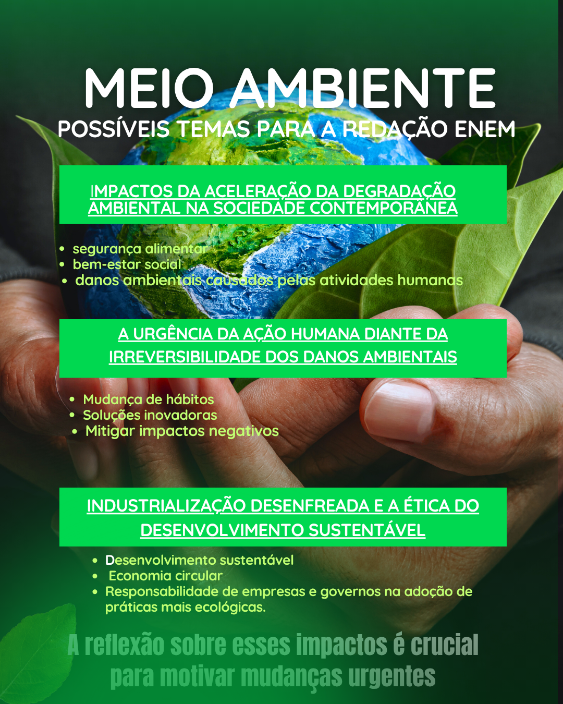

Meio ambiente
Argumento de autoridade ONU e Acordo de Paris: A Organização das Nações Unidas, por meio de acordos internacionais como o Acordo de Paris, sustenta que a ação climática imediata é indispensável para limitar o aumento da temperatura global a 1,5 °C até o final do século. Argumento histórico Desde a Revolução Industrial, a humanidade intensificou a exploração de recursos naturais e o uso de combustíveis fósseis, o que marcou o início da aceleração do impacto ambiental. Esse processo histórico mostra que o desenvolvimento econômico tradicional sempre esteve atrelado à degradação ambiental, o que exige, hoje, uma ruptura com esse modelo. Argumento de exemplificação O derretimento das calotas polares, os incêndios florestais em larga escala — como os que atingem anualmente a Amazônia e a Califórnia —, além de inundações e secas extremas em diferentes continentes, são exemplos concretos dos efeitos das mudanças climáticas, com impactos diretos na saúde pública, na agricultura e na economia. Argumento de comparação Enquanto países como a Alemanha e a Dinamarca avançam na produção de energia limpa e na gestão eficiente de resíduos, outras nações ainda mantêm altos níveis de emissão de carbono e políticas ambientais frágeis. Essa disparidade revela a necessidade de um esforço global, mas também de adaptações locais mais comprometidas. Argumento de raciocínio lógico (ou causa e consequência) O uso intensivo de combustíveis fósseis, o desmatamento e a poluição provocam desequilíbrios ecológicos severos. Como consequência, há perda de biodiversidade, elevação do nível do mar e ameaças à segurança alimentar. Sem intervenção imediata, esses efeitos tendem a se agravar, comprometendo o futuro das próximas gerações.